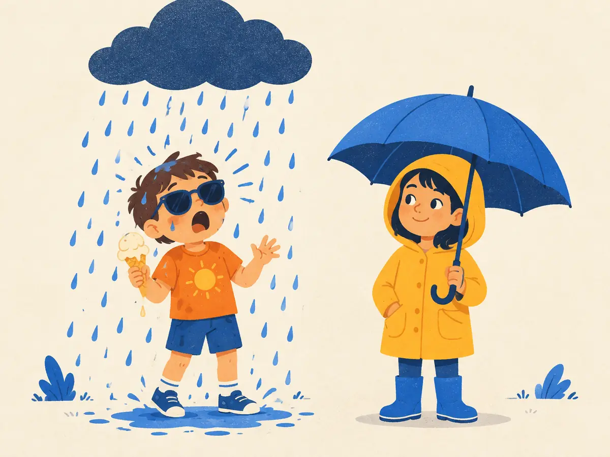

Entropy, cross-entropy & KL
Every LLM is pretrained by minimising one number: cross-entropy. This lesson builds it from a single intuitive idea, surprise, and then meets its sibling, the KL divergence, which comes back later to keep RLHF on a leash and to teach small models from big ones.
By the end you can
- Compute surprise and entropy, and explain entropy as average surprise.
- Compute cross-entropy, and explain why it is the LLM training loss.
- Explain KL divergence as $H(p, q) - H(p)$, why it's never negative and not symmetric, and where it appears in RLHF and distillation.
Take your best guess. Being wrong now helps the right answer stick later.
Which is more surprising: a fair coin landing heads, or a fair die landing on 6?
- The coin landing heads
- The die landing on 6
- They're equally surprising
- Surprise can't be measured
A model gives the correct next token probability 1. What is its training loss on that token?
- 0
- 1
- Infinite
- −1
Surprise: $-\log p$
How surprised should you be when something with probability $p$ happens? Information theory (Shannon, 1948) answers:
$$\text{surprise}(x) = -\log p(x) = \log \frac{1}{p(x)}$$This formula has exactly the properties you'd want:
- A certain event ($p = 1$) carries zero surprise, and rarer events are more surprising.
- For independent events, probabilities multiply, so surprises add: $-\log(p_1 p_2) = -\log p_1 - \log p_2$. Two coin flips are twice as surprising as one.
With $\log_2$ the unit is the bit: a fair coin flip is 1 bit, a fair die roll $\log_2 6 \approx 2.58$ bits, and a 1-in-100 event $6.64$ bits. With the natural log $\ln$ (what ML code uses) the unit is the nat, and 1 nat $\approx 1.44$ bits.
Entropy: average surprise
The entropy of a distribution is its expected surprise, the average over outcomes weighted by how often each happens:
$$H(p) = \sum_x p(x)\,\big(-\log p(x)\big) = \mathbb{E}_{x\sim p}\big[-\log p(x)\big]$$It measures unpredictability. A fair coin has 1 bit. A 90/10 coin has only $0.47$ bits, since you're rarely surprised. A uniform choice among $n$ outcomes has the maximum, $\log_2 n$ bits: about 15.6 bits for 50,000 equally likely tokens. Shannon showed it's also the fewest bits per symbol any lossless code can average, which is why compression and language modelling are two sides of one coin.
Cross-entropy: surprise under the wrong beliefs
Now suppose outcomes really follow $p$, but you believe $q$ and get surprised accordingly. Your average surprise is the cross-entropy:
$$H(p, q) = \sum_x p(x)\,\big(-\log q(x)\big)$$The weights $p(x)$ come from reality (how often each outcome actually happens); the surprise $-\log q(x)$ comes from your model. A key fact, known as Gibbs' inequality: $H(p, q) \ge H(p)$, with equality only when $q = p$. You can't beat the truth at predicting the truth.
Cross-entropy is the LLM training loss
In training, the "truth" at each position is the token that actually came next. That's a one-hot $p$: probability 1 on the actual token, 0 elsewhere. Every term of the sum vanishes except one:
$$H(p, q) = -\log q(\text{actual next token})$$Average that over every position in the batch and you have the pretraining loss: the mean negative log-likelihood from P1.5. In PyTorch it's F.cross_entropy(logits, targets), which applies softmax and natural log internally, so the loss is in nats. Its exponential is the perplexity: a loss of 2.0 nats means $e^{2} \approx 7.4$, "as unsure as picking uniformly among about 7 tokens".
Worked example
From P1.5, a model gives "mat" probability 0.45 and "roof" 0.06 after "The cat sat on the".
- The next token really is "mat": loss $= -\ln 0.45 \approx 0.80$ nats
- The next token really is "roof": loss $= -\ln 0.06 \approx 2.81$ nats. An unlikely-but-true token costs much more
- To push the loss down, the model must raise $q$ on whatever really occurs, across millions of examples
Your turn (faded example)
Over three positions, a model gives the actual next tokens probabilities $0.9$, $0.5$ and $0.1$.
- Loss on the first token, $-\ln 0.9$:
- Loss on the third token, $-\ln 0.1$:
- Mean loss over all three (the second is $-\ln 0.5 \approx 0.693$):
- Perplexity, $e^{\text{mean loss}}$:
KL divergence: the extra cost of being wrong
The gap between cross-entropy and entropy is the Kullback–Leibler (KL) divergence:
$$D_{\mathrm{KL}}(p\,\|\,q) = H(p, q) - H(p) = \sum_x p(x)\,\log\frac{p(x)}{q(x)}$$It's the average number of extra bits (or nats) you pay for using $q$ when the truth is $p$. Two properties to remember:
- Never negative: $D_{\mathrm{KL}}(p\,\|\,q) \ge 0$, and it's 0 only when $q = p$.
- Not symmetric: usually $D_{\mathrm{KL}}(p\,\|\,q) \ne D_{\mathrm{KL}}(q\,\|\,p)$, so it isn't a true distance. With $p = (0.9, 0.1)$ and $q = (0.5, 0.5)$: $D_{\mathrm{KL}}(p\,\|\,q) \approx 0.53$ bits, but $D_{\mathrm{KL}}(q\,\|\,p) \approx 0.74$ bits.
This explains what training does. For fixed data, $H(p_{\text{data}})$ is a constant the model can't change, so minimising cross-entropy is the same as minimising $D_{\mathrm{KL}}(p_{\text{data}}\,\|\,q_{\text{model}})$: pulling the model's distribution towards the data's.
The asymmetry has a personality. $D_{\mathrm{KL}}(p\,\|\,q)$ punishes $q$ hard for giving low probability to anything $p$ does, so minimising it over $q$ tends to cover all of $p$. $D_{\mathrm{KL}}(q\,\|\,p)$ punishes $q$ for putting mass where $p$ has little, so it tends to lock onto one mode. Which direction you minimise is a real design choice, for example in distillation.
Explain like I'm 5

Two kids head out on a day when it often rains. One is totally sure it'll be sunny and wears shorts and sunglasses. The other thinks "maybe rain" and brings an umbrella.
It rains. The sunny-sure kid gets a huge shock. The umbrella kid barely blinks: they expected it might happen.
Cross-entropy is how shocked you are on average. KL is the extra shock you get because your guess about the weather was wrong. Being sure about the wrong thing costs the most.
Where it breaks: here only the kid's guess matters. In the maths, how often it really rains matters too, because each shock is weighted by how often that weather actually happens.
Playground: reality versus forecast
Two outcomes, rain or sun. Set how often it really rains ($p$) and what the forecast says ($q$). The blue curve is cross-entropy for every possible forecast; its lowest point is at $q = p$.
With rain 30% of the time, the umbrella kid's forecast ($q = 0.5$) costs only 0.12 extra bits on average, while the sure-of-sun forecast ($q = 0.01$) costs 1.12, because each rainy day hits with $-\log_2 0.01 \approx 6.6$ bits of surprise.
Where KL comes back
- RLHF (M3.3): when fine-tuning a model to maximise a learned reward, a penalty $\beta \cdot D_{\mathrm{KL}}(\pi_\theta\,\|\,\pi_{\text{ref}})$ keeps the new policy $\pi_\theta$ close to the reference model $\pi_{\text{ref}}$. Without it, the policy can drift towards odd text that games the reward model instead of genuinely improving. This was used by Ziegler et al. (2019) and InstructGPT (Ouyang et al., 2022). In practice it's estimated per token from $\log \pi_\theta - \log \pi_{\text{ref}}$ on sampled text.
- Distillation (M5.2): a small "student" model is trained to match a large "teacher's" whole output distribution, not just the one-hot label, by minimising cross-entropy or KL between them (Hinton, Vinyals & Dean, 2015). The teacher's soft probabilities carry far more information per token than a single correct answer.
Why is minimising cross-entropy on training data the same as minimising the KL divergence from the data to the model?
What is the entropy of a fair four-sided die, in bits?
- $0.25$
- $4$
- $2$
- $1$
The model gives the actual next token probability 0.25. What is the cross-entropy loss for that position, in nats?
- $0.25$
- $\ln 4 \approx 1.39$
- $2$
- $0.75$
Which statement about $D_{\mathrm{KL}}(p\,\|\,q)$ is true?
- It can be negative when $q$ is a better model than $p$
- It always equals $D_{\mathrm{KL}}(q\,\|\,p)$
- It equals $H(p) - H(p, q)$
- It's $\ge 0$, it's 0 only if $q = p$, and in general it differs from $D_{\mathrm{KL}}(q\,\|\,p)$
(From P1.5) A training batch has 4 million tokens. Why is the loss an average of $-\log q$ over the tokens rather than the product of the $q$'s?
- The product would underflow to 0; logs turn it into a sum, and averaging makes batches of any size comparable
- Products of probabilities aren't defined for tokens
- Averaging makes the loss symmetric
- The log makes the loss positive, and that's its only purpose
Key takeaways
- Surprise $= -\log p$: 0 for certain events, larger for rare ones, additive for independent ones. Bits use $\log_2$; nats use $\ln$.
- Entropy $H(p)$ is average surprise: the floor on how predictable the source is.
- Cross-entropy $H(p, q) = \sum_x p(x)(-\log q(x))$. With one-hot targets it's $-\log q(\text{actual token})$: the LLM training loss.
- KL $= H(p, q) - H(p) \ge 0$: zero only at $q = p$, and asymmetric.
- KL reappears as the penalty in RLHF and the matching loss in distillation.
About 20 minutes in NumPy: code surprise, entropy, cross-entropy and KL, check that KL is never negative and isn't symmetric on thousands of random distributions, and compute the loss of a toy next-token predictor. Runs free in your browser.
Adding cards schedules your first spaced review.